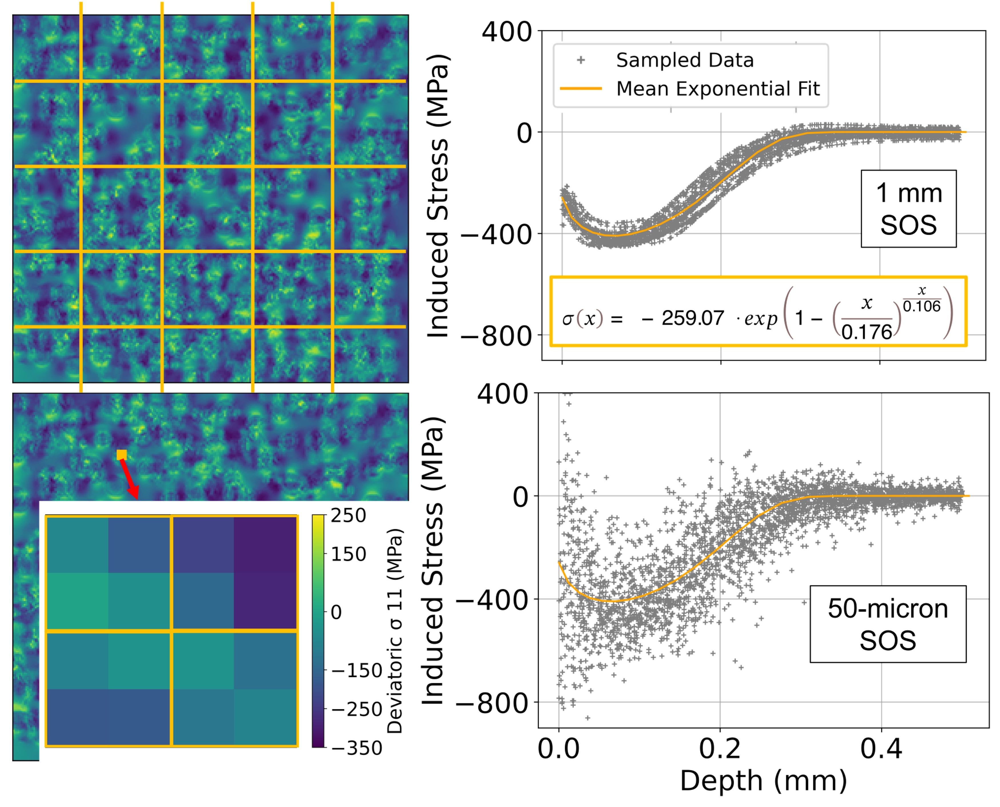

Machine Learning Surrogate Approach
Finite element models are great at providing repeatable, precise, and physics-based predictions. However, they are also computationally expensive to run and time consuming to obtain converged results. The surrogate modeling approach looks to solve this issue, by utilizing FE models to create training data for a machine learning model. The goal of the surrogate model is to recreate finite element results, but in a fraction of the time. The trade off is in the flexibility of the surrogate model. The surrogate model is only able to predict results for a narrow range of problems, one problem type, one set of material models. COBRA has built-in safety factors to sample a wider range of conditions than the user specifies to ensure the model is robust across the range of process conditions. For processes composed of discrete events, with stochastic conditions, the surrogate model can be a great approach for infering a continuous function from a discrete set of data points.
COBRA is currently setup to create training data for the shot peening process. In shot peening, thousands of steel or ceramic particles (~1 mm diameter) are accelerated to high velocities (~65 m/s) and impact the surface of a part. The impact plasticizes the part, creating a compressive stress state at the surface. The compressive stress state helps to inhibit crack propagation, extending the service life of many automotive and aerospace components (axle gears, leaf springs, turbine blades, landing gears, etc).
Every particle has a unique trajectory, and impact conditions (velocity, angle, etc) that are stochastic. Over thousands of impacts, this uncertainty compounds. Overlapping impacts and random variability in the number of impacts per location further complicate the problem. COBRA approaches this by sampling process parameters to create a random impact coverage map for the larger part. The coverage map is then sliced into many smaller models, 0.5 mm in size. The sequence of impacts is simulated in COBRA, one impact at a time. The state of the part is saved at each impact, and projected as the initial condition for the next impact. This process is repeated until the entire coverage map is simulated.
 COBRA-ML accesses the FEA outputs, and parses them to create training data for the ML model. The input data is composed of two parts, the part field and particle field. The part field is a four dimensional tensor. The initial state FEA shape functions for stress (6 components), plastic strain (9 components), and hardening variable (1 component) are evaluated on a uniform 3 dimensnioal spatial grid yielding an imput shape of (30,30,30,16). A three-dimensional convolutional neural network is used to process the intial state of the part. The particle field is a three dimensional tensor, with a two-projecttion of the particle evaluated on the same uniform grid, and the particle's velocity and density at each point. The particle field is processed by a two-dimensional convolutional neural network. The output of the two networks are concatenated, and processed by a fully connected neural network. The goal of the network is to predict the vector of stress, plastic strain, and hardening variable after the impact, at the center set of nodes. At each time step, the state of the part is stitched together by predicting the final state of all sets of adjacent nodes. The network uses local context (i.e. the state of surrounding nodes), without knowing a global position for any node.
That is the magic of COBRA-ML. By simulating many particles hitting in random locations, varying particle size, shape, and velocity, the ML model is able to learn the physics of the process, and predict the final state of the part. How fast? At last check, a COBRA simulation runs in about 8 to 10 hours, while COBRA-ML can recreate the result in about 12 seconds. This opens up a world of possibilities for process optimization, and the ability to simulate distributed process outcomes in accelerated time that was simply not possible before.
Learn more about COBRA's FEA ApproachLearn how to install COBRA